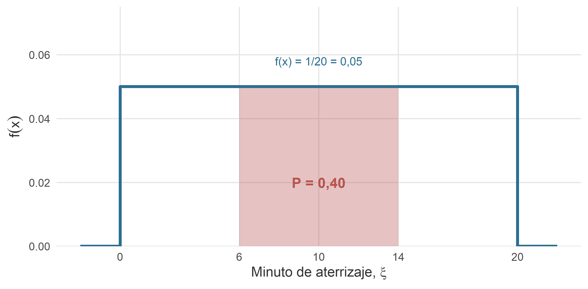
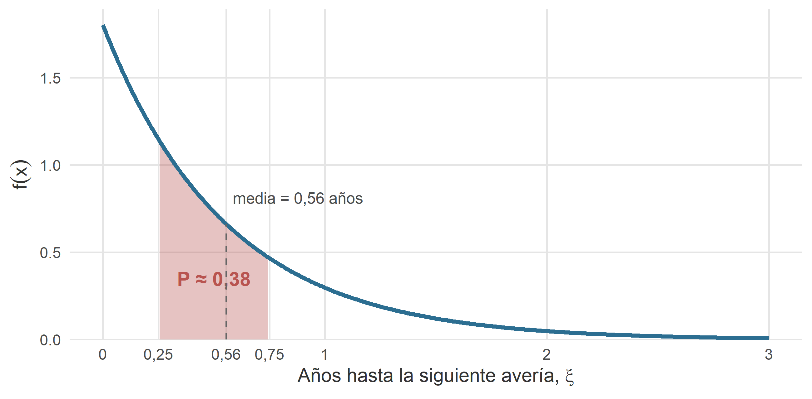
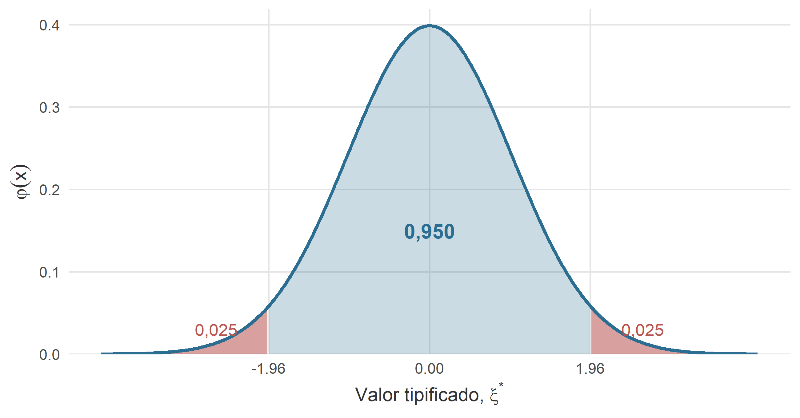
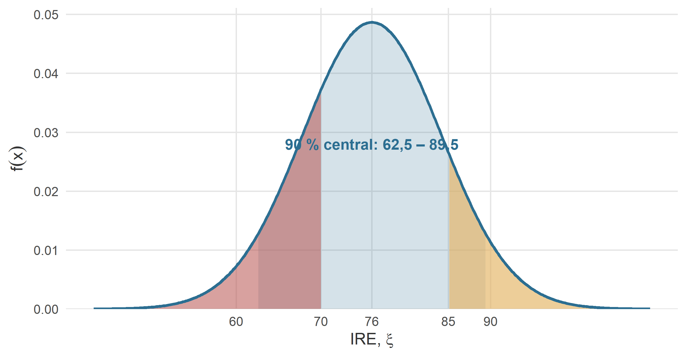
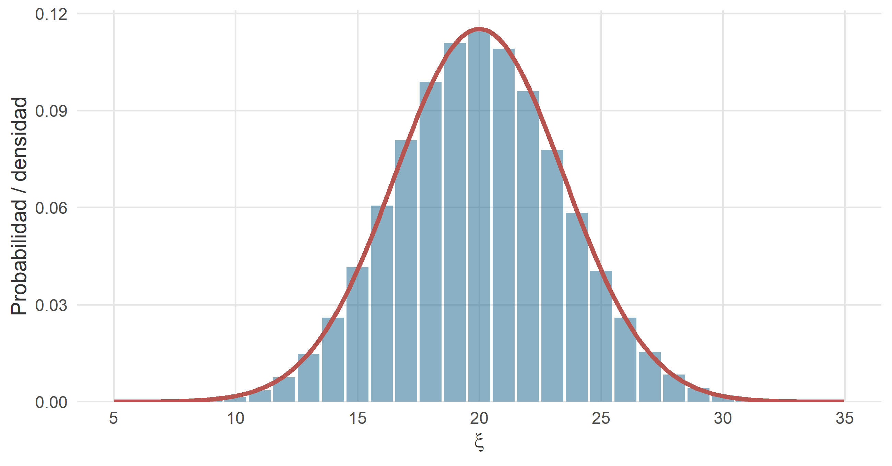
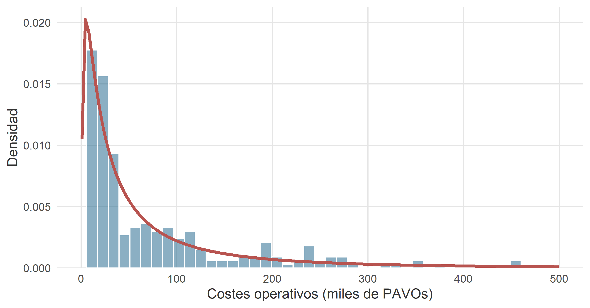

9 Modelos de probabilidad continuos
Figura 9.1. Cuando los datos se acumulan sin ponerse de acuerdo con ningún valor concreto, la campana aparece sola. No hace falta invocarla; basta con dejar de mirar demasiado cerca.
— Anotación al margen de un cuaderno de bitácora del capitán Spock Phoenicopterus, jefe de personal de navegación, encontrado durante una escala técnica en Fhloston Paradise.
9.1 Introducción
En el capítulo anterior catalogamos los modelos discretos que aparecen una y otra vez en la práctica: Bernoulli, binomial, Poisson, binomial negativa e hipergeométrica. Todos ellos comparten un rasgo común: la variable modelada solo puede tomar un conjunto —finito o numerable— de valores enteros. Cargueros que llegan a tiempo, averías al año, reactores defectuosos, empresas con flota renovada. Contamos.
Este capítulo cambia el chip. Las variables que aquí interesan son continuas: pueden tomar cualquier valor en un intervalo. No cuántas naves aterrizan, sino cuánto tarda una nave en aterrizar. No cuántos empleados hay en la plantilla, sino cuánto cobra cada uno de ellos. No cuántas averías registra una flota este año, sino cuánto tiempo pasa entre dos averías consecutivas. La aritmética cambia porque, como se vio en el capítulo 7, en una variable continua la probabilidad de un valor puntual es cero; lo que tiene sentido son las probabilidades sobre intervalos, calculadas como áreas bajo la función de densidad.
Nos concentraremos aquí en cuatro modelos, en este orden:
- La distribución uniforme continua, el modelo más sencillo posible: “todos los valores del intervalo son igualmente verosímiles”.
- La distribución exponencial, para modelar tiempos de espera entre sucesos raros. Está íntimamente ligada a la Poisson del capítulo anterior.
- La distribución normal, la reina absoluta de la estadística clásica. Si un curso de estadística empresarial pudiera reducirse a una sola distribución, sería esta.
- La distribución log-normal, una vieja conocida disfrazada: es una variable cuyo logaritmo se distribuye normalmente. Muy útil para modelar variables económicas asimétricas (ingresos, ventas, precios).
Omitiremos deliberadamente las funciones generatrices, como en el capítulo anterior.
Cómo leer este capítulo. Para cada modelo se sigue el mismo guion: primero, la intuición (qué fenómeno del mundo real produce este tipo de variable); a continuación, la definición formal con su función de densidad, media y varianza; después, uno o dos ejemplos con entidades del universo RStars; y, cuando procede, una propiedad característica del modelo. Al final del capítulo, una guía rápida de decisión responde a la pregunta operativa: “¿qué modelo continuo aplico?”.
9.2 Distribución uniforme continua
9.2.1 La intuición: todos los valores por igual
Empezamos por el modelo más simple concebible. Una variable aleatoria continua sigue una distribución uniforme en el intervalo \([a, b]\) cuando todos los valores del intervalo son igualmente verosímiles. La densidad es la misma en cualquier punto del intervalo, y cero fuera de él. Gráficamente, es un rectángulo. Matemáticamente, es lo más aburrido que puede hacer una densidad. Pedagógicamente, es un modelo excelente para empezar, porque las probabilidades se calculan como cocientes de longitudes: sin integrales sofisticadas, sin trucos.
El ejemplo canónico son las ventanas horarias de aterrizaje. La torre de control del astropuerto de Klendathu asigna a cada carguero una franja de aterrizaje de, pongamos, veinte minutos. El piloto sabe que aterrizará en algún instante de esa franja, pero, dentro de ella, no hay ningún motivo para pensar que un instante sea más probable que otro (el tráfico está regulado precisamente para que así sea). La hora exacta de aterrizaje, medida en minutos desde el comienzo de la ventana, es una variable uniforme en el intervalo \([0, 20]\).
Otros ejemplos con la misma estructura: la posición de un contenedor descargado dentro de un pasillo del almacén; el instante en el que se produce un corte de energía dentro de una hora concreta; el error de redondeo de un instrumento con precisión de un decimal (uniforme en \([-0{,}5;\, 0{,}5]\)). En todos, la clave es la ausencia de motivos para preferir unos valores a otros dentro del intervalo.
9.2.2 Definición formal
Una variable aleatoria \(\xi\) sigue una distribución uniforme continua en el intervalo \([a, b]\), con \(a < b\), si su función de densidad es constante dentro del intervalo y nula fuera de él:
\[ f(x) = \begin{cases} \dfrac{1}{\,b - a\,} & \text{si } a \leq x \leq b, \\[4pt] 0 & \text{en otro caso.} \end{cases} \]
Escribimos \(\xi \to U(a; b)\). Los dos parámetros del modelo son los extremos del intervalo: \(a\) (inferior) y \(b\) (superior). No hay más.
Que la densidad valga \(1/(b-a)\) no es un capricho: es lo que necesita valer para que el área total del rectángulo sea \(1\), esto es, para que \(f\) sea una densidad legítima. La probabilidad de que \(\xi\) caiga en un subintervalo \([c, d] \subseteq [a, b]\) es, simplemente,
\[ P(c \leq \xi \leq d) \;=\; \int_{c}^{d} \frac{1}{b - a}\, dx \;=\; \frac{d - c}{b - a}. \]
Es decir: la proporción que representa la longitud \(d - c\) sobre la longitud total \(b - a\). Cociente de longitudes; nada más.
Media y varianza:
\[ \mu = E(\xi) = \frac{a + b}{2}, \qquad \sigma^{2} = \operatorname{Var}(\xi) = \frac{(b - a)^{2}}{12}. \]
La media es el punto medio del intervalo, como cabía esperar de un modelo simétrico. La varianza crece con el cuadrado de la amplitud: cuanto más ancho el rectángulo, más disperso el resultado.
9.2.3 Ejemplo: ventana de aterrizaje en el astropuerto de Klendathu
arrakis freight tiene contratada una ventana de aterrizaje de \(20\) minutos en el astropuerto de Klendathu para cada carguero entrante. El instante exacto de tocar la plataforma, medido en minutos desde el comienzo de la ventana, es una variable
\[ \xi = \text{"minuto de aterrizaje dentro de la ventana"} \;\to\; U(0;\, 20). \]
La densidad vale \(1/20 = 0{,}05\) minutos\(^{-1}\) en todo el intervalo. La media es \(\mu = 10\) minutos (mitad de la ventana) y la desviación típica \(\sigma = 20 / \sqrt{12} \approx 5{,}77\) minutos.
Preguntas concretas:
-
Que el aterrizaje ocurra en los cinco primeros minutos.
\[ P(\xi \leq 5) = \frac{5 - 0}{20 - 0} = 0{,}25. \]
Uno de cada cuatro cargueros aterriza pronto. No es que sean puntuales: es que la definición de “pronto” es literalmente “el primer cuarto”.
-
Que se retrase más allá del minuto 15.
\[ P(\xi > 15) = \frac{20 - 15}{20} = 0{,}25. \]
La misma proporción, por simetría.
-
Que aterrice en la franja central, entre el minuto 6 y el 14.
\[ P(6 \leq \xi \leq 14) = \frac{14 - 6}{20} = 0{,}40. \]
La figura 9.1 muestra la densidad completa y sombrea la probabilidad correspondiente al intervalo central. La visualización deja claro lo que la fórmula anuncia: calcular probabilidades en una uniforme es medir rectángulos.

Figure 9.1: Función de densidad de \(\xi \to U(0;\, 20)\): instante de aterrizaje dentro de la ventana asignada a un carguero de arrakis freight en el astropuerto de Klendathu. El área sombreada corresponde a \(P(6 \leq \xi \leq 14) = 0{,}40\).
9.2.4 Cuándo (y cuándo no) es razonable la uniforme
La uniforme es un modelo tentador por su simplicidad, pero conviene no abusar de ella. En muchos problemas se aplica por comodidad —“no sé bien cómo se comporta esta variable, así que asumo que es uniforme entre estos dos valores”— cuando la realidad la contradice sin disimulo. Si a un piloto de hyperdrive express se le pregunta el minuto de aterrizaje real y sus datos históricos se apiñan en la parte final de la ventana (porque tiende a apurar), la uniforme mentirá: la densidad debería crecer hacia la derecha. La uniforme, como cualquier modelo, es una hipótesis, no una comodidad.
Un uso particularmente valioso de la uniforme es como modelo de referencia: en simulación estocástica, los generadores de números aleatorios producen precisamente valores \(U(0; 1)\), y a partir de ahí se generan realizaciones de cualquier otra distribución. Pero eso lo dejamos para más adelante.
9.3 Distribución exponencial
9.3.1 La intuición: tiempo hasta el próximo suceso
La distribución exponencial aparece cuando se mide el tiempo que transcurre entre sucesos raros en un proceso de Poisson. Recordemos del capítulo anterior: si en la ruta Coruscant–Naboo los avistamientos de piratas siguen una Poisson de tasa \(\lambda = 2{,}3\) avistamientos por semana, ¿qué distribución sigue el tiempo entre dos avistamientos consecutivos?
La respuesta es limpia: exponencial. Concretamente, \(\mathrm{Exp}(\lambda)\) con la misma \(\lambda\) de la Poisson generadora. Poisson y exponencial son las dos caras de la misma moneda. Poisson cuenta cuántos sucesos ocurren en un intervalo fijo; exponencial mide cuánto tiempo pasa hasta que ocurre el próximo suceso. Si dominamos una, tenemos la otra prácticamente gratis.
Otros ejemplos con este mismo esqueleto: el tiempo entre averías graves de un carguero de la flota KORRIGAN; el tiempo entre entradas de nuevos clientes en la oficina de vader and company; el tiempo hasta la próxima reserva de ruta en el sistema comercial de excalibur freight systems. En todos los casos, un evento raro que puede ocurrir en cualquier instante con la misma “propensión”, y una variable —el tiempo de espera— que interesa modelar.
9.3.2 Definición formal
Una variable aleatoria \(\xi\) (típicamente, un tiempo, y por tanto \(\xi \geq 0\)) sigue una distribución exponencial de parámetro \(q > 0\) si su función de densidad es
\[ f(x) = q \cdot e^{-q x}, \qquad x \geq 0. \]
Escribimos \(\xi \to \mathrm{Exp}(q)\). El único parámetro, \(q\), se interpreta como la tasa del proceso subyacente: número de sucesos esperados por unidad de tiempo. Si \(q = 2\) averías por año, el tiempo medio hasta la siguiente avería será \(1/q = 0{,}5\) años.2
La función de distribución tiene una forma especialmente cómoda:
\[ F(x) = P(\xi \leq x) = 1 - e^{-q x}, \qquad x \geq 0, \]
de la que se derivan las probabilidades típicas sin apenas cálculo: \(P(\xi > x) = e^{-q x}\), y para un intervalo \([a, b]\), \(P(a \leq \xi \leq b) = e^{-q a} - e^{-q b}\).
Media y varianza:
\[ \mu = E(\xi) = \frac{1}{q}, \qquad \sigma^{2} = \operatorname{Var}(\xi) = \frac{1}{q^{2}}. \]
Un hecho llamativo: media y desviación típica coinciden, ambas iguales a \(1/q\). La exponencial es una distribución muy dispersa en términos relativos; su coeficiente de variación es siempre igual a \(1\).
9.3.3 La propiedad de pérdida de memoria
La exponencial tiene una propiedad matemática que la distingue de casi cualquier otro modelo de tiempo de espera, y que conviene entender bien porque tiene lecturas muy contraintuitivas. Formalmente:
\[ P(\xi > a + b \mid \xi > b) \;=\; P(\xi > a) \quad \text{para todo } a, b > 0. \]
Traducido: si un carguero lleva ya \(b\) meses sin averiarse, la probabilidad de que aguante otros \(a\) meses más sin averiarse es exactamente la misma que la que tenía al salir de fábrica de aguantar \(a\) meses. La exponencial no “recuerda” el tiempo que lleva esperando. Cada instante, en cierto sentido, es un nuevo comienzo.
Este comportamiento hace de la exponencial un modelo razonable para tiempos entre sucesos puramente aleatorios —cuando el proceso subyacente carece de mecanismos de desgaste o de acumulación—, pero un modelo inadecuado para tiempos hasta fallo de componentes que envejecen (motores, rodamientos, tuberías): en esos casos, cuanto más lleve un componente en servicio, más probable es que falle pronto, y la distribución no podrá ser exponencial. Para esos casos se emplean modelos como la Weibull, que caen fuera del alcance de este capítulo.
Un aviso sobre la pérdida de memoria. Esta propiedad se malinterpreta con frecuencia. Que una variable “no tenga memoria” no significa que los sucesos ocurran a intervalos regulares o predecibles: significa lo contrario, que la ocurrencia del próximo suceso es totalmente indiferente a lo que haya pasado antes. Un jugador de casino que apuesta al negro tras diez rojas consecutivas está cometiendo, en su fuero interno, exactamente el error opuesto: creer que la ruleta sí tiene memoria. La ruleta, como la exponencial, es olvidadiza por diseño.
9.3.4 Ejemplo: tiempo entre averías graves en la flota KORRIGAN
Del fichero astilleros_48.xlsx se desprende que las naves construidas por el astillero KORRIGAN acumulan, en conjunto, un número muy variable de averías graves a lo largo de su vida operativa. Consideremos una nave concreta, la iron sovereign, que ha sufrido varias averías a lo largo de sus \(9\) años en servicio. Supongamos —el dato es ad hoc, coherente con el registro del fichero— que las averías graves de esta nave se producen conforme a un proceso de Poisson con tasa \(q = 1{,}8\) averías por año. Entonces la variable
\[ \xi = \text{"tiempo, en años, hasta la siguiente avería grave"} \;\to\; \mathrm{Exp}(1{,}8). \]
El tiempo medio hasta el próximo incidente es \(\mu = 1 / 1{,}8 \approx 0{,}556\) años, o alrededor de \(6{,}7\) meses. Algunas probabilidades relevantes para el jefe de mantenimiento, Anakin Falco:
-
Que la próxima avería llegue en menos de seis meses (\(x = 0{,}5\) años).
\[ P(\xi \leq 0{,}5) = 1 - e^{-1{,}8 \cdot 0{,}5} \approx 0,5934. \]
Casi seis de cada diez veces, el próximo susto llega antes del medio año.
-
Que la nave aguante más de un año sin averiarse.
\[ P(\xi > 1) = e^{-1{,}8 \cdot 1} \approx 0,1653. \]
Un \(17\) % de probabilidad, aproximadamente. No es imposible, pero no es lo esperable.
-
Que la próxima avería caiga entre el tercer y el noveno mes (\(0{,}25\) y \(0{,}75\) años).
\[ P(0{,}25 \leq \xi \leq 0{,}75) = e^{-1{,}8 \cdot 0{,}25} - e^{-1{,}8 \cdot 0{,}75} \approx 0,3784. \]
La figura 9.2 muestra la densidad y la probabilidad asociada al intervalo \([0{,}25;\, 0{,}75]\). Nótese la forma inconfundible: densidad máxima en el origen y decaimiento exponencial, que es lo que da nombre al modelo.

Figure 9.2: Función de densidad de \(\xi \to \mathrm{Exp}(1{,}8)\): tiempo, en años, hasta la próxima avería grave de la nave iron sovereign (astillero KORRIGAN). El área sombreada corresponde a \(P(0{,}25 \leq \xi \leq 0{,}75)\).
Y la propiedad de pérdida de memoria, en este contexto, dice algo incómodo pero cierto: si la iron sovereign lleva ya ocho meses sin averías, la probabilidad de que aguante seis meses más es la misma que la que tenía al terminar la última revisión: alrededor del \(41\) %. La nave, en el modelo, no “sabe” cuánto tiempo lleva sin averiarse; nosotros sí lo sabemos, pero ese conocimiento no cambia el pronóstico. Anakin Falco lo tiene asumido, aunque en el fondo prefiera no pensar en ello.
9.4 Distribución normal
9.4.1 La intuición: la ubicuidad de la campana
Si un curso entero de estadística tuviera que reducirse a un único modelo probabilístico, no habría dudas: sería la distribución normal. Su función de densidad —esa campana simétrica y elegante que aparece en la portada de todos los manuales, incluido, para vergüenza propia, este— describe con notable fidelidad multitud de fenómenos aparentemente inconexos: la estatura de una población adulta, los errores de medida de un instrumento bien calibrado, los pesos de los cargamentos que salen del almacén, el rendimiento diario de un ETF diversificado, los salarios de un colectivo con estudios homogéneos. Nada de esto es casualidad: hay un teorema, el teorema central del límite, que explica —y hasta cierto punto justifica— esta ubicuidad. Lo veremos en un capítulo posterior; de momento, aceptémoslo como hecho de la vida.
Intuitivamente, la campana surge siempre que una variable aleatoria es el resultado de sumar muchos pequeños efectos independientes. El tonelaje total transportado por una flota es la suma de los tonelajes de cada nave; el peso de una remesa es la suma de los pesos de sus contenedores; el error final de una medida es la acumulación de muchos errores pequeños e independientes. En todos estos casos —y en muchísimos más— los valores centrales son más frecuentes que los extremos, y la distribución adopta la forma de campana que la normal describe con precisión.
Otras propiedades que hacen de la normal una favorita: es simétrica (media, mediana y moda coinciden), sus colas caen suave pero decididamente, está enteramente caracterizada por dos parámetros bien interpretables (la media y la desviación típica) y —quizás lo más importante en la práctica— sus probabilidades están tabuladas y se manejan con soltura.
9.4.2 Definición formal
Una variable aleatoria \(\xi\) sigue una distribución normal de media \(\mu\) y desviación típica \(\sigma > 0\) si su función de densidad es
\[ f(x) \;=\; \frac{1}{\sigma \sqrt{2 \pi}} \cdot e^{-\dfrac{(x - \mu)^{2}}{2 \sigma^{2}}}, \qquad -\infty < x < \infty. \]
Escribimos \(\xi \to N(\mu; \sigma)\).3 La campana está centrada en \(\mu\) y tiene una anchura controlada por \(\sigma\): dos tercios aproximadamente de la probabilidad caen dentro de \(\mu \pm \sigma\), un \(95\) % dentro de \(\mu \pm 2\sigma\), y prácticamente toda (\(99{,}7\) %) dentro de \(\mu \pm 3\sigma\). Es la conocida regla empírica del 68–95–99,7.
Media y varianza:
\[ \mu = E(\xi) = \mu, \qquad \sigma^{2} = \operatorname{Var}(\xi) = \sigma^{2}. \]
Es la única distribución de este manual en la que los dos parámetros del modelo son directamente la media y la varianza de la variable. Traducido: si nos dicen “\(\xi\) sigue una normal de media \(185\) y desviación típica \(10\)”, ya sabemos todo lo que hay que saber para calcular probabilidades. No hay que despejar nada.
Propiedad reproductiva (importantísima en la práctica). Si \(\xi_{1} \to N(\mu_{1}; \sigma_{1})\), \(\xi_{2} \to N(\mu_{2}; \sigma_{2})\), \(\ldots\), \(\xi_{n} \to N(\mu_{n}; \sigma_{n})\) son variables normales independientes, y \(a, b_{1}, b_{2}, \ldots, b_{n}\) son constantes reales (con no todas las \(b_j\) nulas), la combinación lineal
\[ \eta \;=\; a + b_{1} \xi_{1} + b_{2} \xi_{2} + \cdots + b_{n} \xi_{n} \]
sigue también una distribución normal, con parámetros
\[ \eta \to N\!\left( a + \sum_{j=1}^{n} b_{j} \mu_{j};\;\; \sqrt{\sum_{j=1}^{n} b_{j}^{2} \sigma_{j}^{2}} \right). \]
Se toma la nueva media aplicando la linealidad esperada y la nueva varianza como suma ponderada de varianzas (¡nunca sumar desviaciones típicas directamente!). Esta propiedad es la que hace de la normal la distribución de referencia de las medias muestrales, de las sumas de rendimientos financieros, del tonelaje total de una flota, etc.
9.4.3 La normal estándar y la tipificación
La normal tiene, en apariencia, un problema logístico: hay infinitas normales, una por cada par \((\mu, \sigma)\), y no podemos tabular una por una. La solución es elegante: se tabula una sola —la normal de media cero y desviación típica uno, llamada normal estándar o normal tipificada— y se reduce cualquier otra a ella mediante un cambio de variable.
La normal estándar \(\xi^{*} \to N(0; 1)\) tiene función de densidad
\[ \varphi(x) \;=\; \frac{1}{\sqrt{2 \pi}} \cdot e^{-x^{2}/2}, \qquad -\infty < x < \infty. \]
Sus probabilidades \(P(\xi^{*} \geq z)\) están tabuladas para valores \(z \geq 0\); usando la simetría respecto al origen se obtienen las demás.
Tipificación (o estandarización). Si \(\xi \to N(\mu; \sigma)\), la transformación
\[ \xi^{*} \;=\; \frac{\xi - \mu}{\sigma} \]
produce una variable \(\xi^{*} \to N(0; 1)\). Restar la media centra la distribución en cero; dividir por la desviación típica la escala a desviación típica uno. Todas las probabilidades sobre la normal original se traducen a probabilidades sobre la estándar aplicando la misma transformación a los extremos del intervalo.
Un truco mental para no despistarse. Al tipificar, la desigualdad se conserva: si en la variable original tenemos \(\xi < c\), en la tipificada tenemos \(\xi^{*} < (c - \mu)/\sigma\). Y al tipificar, todas las probabilidades se reducen a la pregunta única: “¿qué probabilidad hay de estar a tantas desviaciones típicas por encima (o por debajo) de la media?”.
9.4.4 Uso de la tabla: ejemplos guiados
Para consolidar la mecánica, veamos —sin necesidad de datos aún— cómo se leen las probabilidades más frecuentes en la \(N(0; 1)\). La tabla, recordemos, proporciona valores del tipo \(P(\xi^{*} \geq z)\) para \(z \geq 0\) (esto es, áreas de la cola derecha).
- \(P(\xi^{*} \geq 1{,}96) = 0{,}025\). Lectura directa.
- \(P(\xi^{*} \leq 1{,}96) = 1 - P(\xi^{*} \geq 1{,}96) = 1 - 0{,}025 = 0{,}975\). Complementario.
- \(P(\xi^{*} \leq -1{,}96) = P(\xi^{*} \geq 1{,}96) = 0{,}025\). Por simetría.
- \(P(\xi^{*} \geq -1{,}96) = 1 - P(\xi^{*} \geq 1{,}96) = 0{,}975\). Complementario del anterior.
- \(P(-1{,}96 \leq \xi^{*} \leq 1{,}96) = 1 - 2 \cdot 0{,}025 = 0{,}950\). El famoso \(95\) % central.
- \(P(1{,}64 \leq \xi^{*} \leq 1{,}96) = P(\xi^{*} \geq 1{,}64) - P(\xi^{*} \geq 1{,}96) = 0{,}0505 - 0{,}025 = 0{,}0255\).
- \(P(-1{,}64 \leq \xi^{*} \leq 1{,}96) = 1 - 0{,}0505 - 0{,}025 = 0{,}9245\).
La figura 9.3 ilustra los tres cálculos más habituales sobre la campana estándar.

Figure 9.3: Función de densidad de la normal estándar \(\xi^{*} \to N(0; 1)\) con tres áreas de referencia: cola derecha en \(z = 1{,}96\), intervalo central \([-1{,}96;\, 1{,}96]\) y cola izquierda en \(z = -1{,}96\). Los tres cálculos se basan en la misma tabla de una sola cola, usando complementarios y simetría.
9.4.5 Ejemplo 1: rendimiento energético de las naves KORRIGAN
Del fichero astilleros_48.xlsx, el Índice de Rendimiento Energético (IRE) de las naves del astillero KORRIGAN presenta una distribución que puede modelarse razonablemente como normal, con media \(\mu = 76{,}0\) y desviación típica \(\sigma = 8{,}2\) (toneladas por unidad de especia, en la ruta de referencia Sol–Centauri B).4 Sea
\[ \xi = \text{"IRE de una nave KORRIGAN elegida al azar"} \;\to\; N(76{,}0;\, 8{,}2). \]
Preguntas concretas del ingeniero de mantenimiento:
-
¿Qué probabilidad hay de que una nave KORRIGAN tomada al azar tenga un IRE inferior a \(70\)?
Tipificamos: \(z = (70 - 76{,}0) / 8{,}2 \approx -0{,}73\). Buscamos \(P(\xi < 70) = P(\xi^{*} < -0{,}73) = P(\xi^{*} > 0{,}73) \approx 0,2327\).
Alrededor de un \(23\) % de las naves están por debajo de ese umbral.
-
¿Qué probabilidad hay de que el IRE de una nave supere el \(85\)?
\(z = (85 - 76{,}0) / 8{,}2 \approx 1{,}10\). Por tabla, \(P(\xi^{*} > 1{,}10) \approx 0,1357\).
Aproximadamente un \(14\) % de las naves están en la franja de alto rendimiento.
-
¿Entre qué valores se concentra el 90 % central de los IRE?
Buscamos \(L\) y \(U\) tales que \(P(L \leq \xi \leq U) = 0{,}90\), con la distribución centrada: \(L = \mu - 1{,}645 \sigma\) y \(U = \mu + 1{,}645 \sigma\).
\(L \approx 76{,}0 - 1{,}645 \cdot 8{,}2 \approx 62,51\), y \(U \approx 76{,}0 + 1{,}645 \cdot 8{,}2 \approx 89,49\).
Es decir, un \(90\) % de las naves tiene un IRE entre \(62{,}5\) y \(89{,}5\) aproximadamente.
La figura 9.4 muestra la campana con los tres puntos de referencia. El resto es geometría.

Figure 9.4: Función de densidad de \(\xi \to N(76{,}0;\, 8{,}2)\): IRE de una nave KORRIGAN elegida al azar. La franja sombreada corresponde al 90 % central; las áreas oscuras a las colas por debajo de 70 y por encima de 85.
9.4.6 Ejemplo 2: tonelaje total de una flota (propiedad reproductiva)
Aquí conviene explotar la propiedad reproductiva de la normal, que es la que la hace realmente útil en la práctica. Supongamos que arrakis freight prepara una flotilla de seis cargueros para una operación conjunta a Klendathu. El tonelaje individual de cada carguero puede modelarse como
\[ \xi_{j} \to N(734{,}6;\, 114{,}5) \quad \text{(miles de toneladas)}, \quad j = 1, 2, \ldots, 6, \]
con los seis tonelajes independientes entre sí.5 Interesa la variable
\[ \eta = \xi_{1} + \xi_{2} + \cdots + \xi_{6} \;=\; \text{"tonelaje total de la flotilla"}. \]
Por la propiedad reproductiva, \(\eta\) sigue también una distribución normal:
\[ \eta \to N\!\left( 6 \cdot 734{,}6;\; \sqrt{6 \cdot 114{,}5^{2}} \right) \;=\; N(4\,407{,}6;\, 280{,}5). \]
Nótese que la media se multiplica por seis, pero la desviación típica solo por \(\sqrt{6} \approx 2{,}45\): la agregación reduce el peso relativo de la incertidumbre, que es la razón matemática de por qué diversificar reduce el riesgo. El coeficiente de variación pasa de \(\sigma / \mu \approx 15{,}6\) % en una nave individual a \(\approx 6{,}4\) % en la flotilla completa.
Pregunta operativa: ¿qué probabilidad hay de que el tonelaje total supere las \(4\,700\) miles de toneladas?
Tipificamos: \(z = (4\,700 - 4\,407{,}6) / 280{,}5 \approx 1{,}04\). Por tabla, \(P(\eta > 4\,700) \approx 0,1492\), en torno al \(15\) % de las expediciones.
9.4.7 La normal como aproximación: cierre del círculo
En el capítulo 8 vimos que la binomial se aproximaba a la Poisson bajo ciertas condiciones. Aquí cerramos el otro extremo: la normal aproxima muy bien tanto a la binomial como a la Poisson cuando los parámetros son suficientemente grandes. Los criterios usuales son:
- Binomial → Normal (De Moivre–Laplace). Si \(\xi \to B(n; p)\) con \(n\) grande y \(p\) no demasiado próximo a \(0\) ni a \(1\) —criterio práctico: \(n p \geq 5\) y \(n q \geq 5\)—, entonces \(\xi \approx N(n p;\, \sqrt{n p q})\).
- Poisson → Normal. Si \(\xi \to \mathrm{Po}(\lambda)\) con \(\lambda \geq 10\) (algunos textos exigen \(\lambda \geq 5\)), entonces \(\xi \approx N(\lambda;\, \sqrt{\lambda})\).
Ambas aproximaciones se justifican por el mismo teorema central del límite. La binomial es una suma de \(n\) Bernoullis independientes, y para \(n\) grande esa suma tiende a ser normal. La Poisson es un límite de binomiales, con lo que hereda la aproximación por transitividad. La figura 9.5 ilustra la calidad de la aproximación en un caso concreto: una binomial \(B(50;\, 0{,}4)\) (barras) frente a la \(N(20;\, \sqrt{12})\) correspondiente (curva). El ajuste es prácticamente perfecto salvo en las colas más extremas.

Figure 9.5: Comparación entre las probabilidades exactas de una binomial \(B(50;\, 0{,}4)\) (barras) y su aproximación normal \(N(20;\, \sqrt{12})\) (curva). Con \(n p = 20\) y \(n q = 30\) ambos claramente por encima de 5, la aproximación es muy buena en toda la masa de la distribución.
En términos operativos: cuando aparezca una binomial con \(n\) enorme (miles) o una Poisson con \(\lambda\) grande (decenas), no calcule sumas monstruosas con \(n\) términos. Aproxime por normal y termine el problema tipificando.
9.5 Un vistazo a la distribución log-normal
9.5.1 La intuición: cuando el logaritmo es normal
Muchas variables de interés en ADE —ingresos empresariales, ventas anuales, precios de activos financieros, tamaños de patrimonios, salarios— comparten un rasgo característico: son estrictamente positivas y fuertemente asimétricas a la derecha. Hay muchas empresas pequeñas y unas pocas gigantes; muchos empleados con salarios modestos y unos pocos altísimos. La normal no puede modelar esto: es simétrica y admite valores negativos.
La distribución log-normal es el modelo natural en estos casos. Una variable \(\xi > 0\) sigue una log-normal si su logaritmo sigue una normal:
\[ \ln \xi \to N(\mu;\, \sigma) \;\iff\; \xi \to \mathrm{LN}(\mu;\, \sigma). \]
Los parámetros \(\mu\) y \(\sigma\) son, respectivamente, la media y la desviación típica del logaritmo de la variable, no de la variable misma. Esta distinción confunde al principio: la log-normal es siempre asimétrica a la derecha, con una cola larga que se extiende hacia valores grandes. Su media (ya no \(\mu\), sino \(E(\xi) = e^{\mu + \sigma^{2}/2}\)) es mayor que su mediana, y ambas son mayores que su moda. Cualquiera que haya visto un histograma de ingresos empresariales o salariales reconoce inmediatamente la forma.
Función de densidad:
\[ f(x) \;=\; \frac{1}{x \sigma \sqrt{2\pi}} \cdot e^{-\dfrac{(\ln x - \mu)^{2}}{2 \sigma^{2}}}, \qquad x > 0. \]
Media y varianza:
\[ E(\xi) = e^{\mu + \sigma^{2}/2}, \qquad \operatorname{Var}(\xi) = \left( e^{\sigma^{2}} - 1 \right) \cdot e^{2\mu + \sigma^{2}}. \]
La lectura operativa de por qué la log-normal es tan frecuente en economía la propuso el ingeniero estadounidense Robert Gibrat en los años treinta: si el crecimiento de una empresa (o de un salario, o de un patrimonio) en cada periodo es un porcentaje aleatorio con esperanza pequeña y varianza moderada, el logaritmo del valor final es la suma acumulada de esos porcentajes; por el teorema central del límite, la suma se aproxima a una normal, y el valor final —la exponencial de esa normal— es log-normal. Los procesos multiplicativos, en el largo plazo, producen log-normales del mismo modo que los aditivos producen normales.
9.5.2 Ejemplo: costes operativos de las empresas interestelares
El fichero interestelar_300.xlsx recoge los costes operativos (variable COSTOP, en miles de PAVOs) de las 300 empresas del sector. La distribución empírica es marcadamente asimétrica: la mediana ronda los \(31\) miles de PAVOs, la media supera los \(97\), y hay compañías con costes superiores a \(1\,000\). Una normal ajustada a estos datos daría, entre otras barbaridades, probabilidades no despreciables de costes negativos, lo cual sería —conceptualmente hablando— un buen problema económico si fuera cierto.
Los costes operativos son un candidato de manual para la log-normal: son el producto de muchos factores multiplicativos (escala de la operación, precios de los insumos, complejidad logística, antigüedad de la flota, número de rutas gestionadas…). Cuando muchos factores multiplicativos entran en juego, el logaritmo se comporta como una suma de efectos y —por el teorema central del límite— tiende a la normal. Del resultado se sigue la log-normal.
Ajustando el modelo: se toma el logaritmo natural de los costes, se estima su media y su desviación típica, y esos son los parámetros.
Los parámetros estimados son \(\mu \approx 3,632\) y \(\sigma \approx 1,417\) (ambos referidos al logaritmo de los costes). Bajo el modelo log-normal:
- La mediana teórica de costes operativos es \(e^{\mu} \approx 37,8\) miles de PAVOs.
- La media es \(e^{\mu + \sigma^{2}/2} \approx 103,2\) miles de PAVOs, muy por encima de la mediana. Así son las distribuciones asimétricas: la media queda “tirada” hacia la derecha por las empresas de gran tamaño.
- \(P(\xi < 10) \approx 0,1740\): alrededor de un \(17,4\) % de las empresas son micro-operadores con costes muy bajos.
- \(P(10 \leq \xi \leq 100) \approx 0,5798\): en torno al \(58,0\) % son operadores de tamaño medio, que constituyen el grueso del sector.
- \(P(\xi > 200) \approx 0,1199\): alrededor de un \(12,0\) % son grandes compañías con costes elevados.
La figura ?? contrasta el histograma empírico de los costes operativos con el ajuste log-normal (curva). El acuerdo es prácticamente perfecto en toda la extensión de la distribución: modelo y datos difieren en menos de un punto porcentual para cualquier umbral razonable. Una normal sobre estos mismos datos daría, en cambio, un ajuste catastrófico.

Figura 9.2. Distribución de los costes operativos (COSTOP, miles de PAVOs) de las 300 empresas del fichero interestelar_300.xlsx con el ajuste log-normal superpuesto. El acuerdo es prácticamente perfecto: la log-normal reproduce con precisión la asimetría y el decaimiento de la cola derecha.
Para hacer visible la calidad del ajuste desde otro ángulo, la tabla ?? compara, para varios umbrales, la proporción real de empresas por debajo del umbral (calculada directamente sobre los datos) con la probabilidad que asigna el modelo log-normal. Las diferencias son inferiores a un punto porcentual en todos los casos.
| Umbral (miles PAVOs) | \(P(\xi \leq u)\) empírica | \(P(\xi \leq u)\) modelo log-normal | Diferencia |
|---|---|---|---|
| 5 | 0.0700 | 0.0767 | +0.0067 |
| 10 | 0.1700 | 0.1740 | +0.0040 |
| 20 | 0.3233 | 0.3266 | +0.0033 |
| 50 | 0.5800 | 0.5782 | -0.0018 |
| 100 | 0.7433 | 0.7538 | +0.0105 |
| 200 | 0.8733 | 0.8801 | +0.0068 |
Log-normal y desigualdad. No es casualidad que las distribuciones de renta y riqueza sean aproximadamente log-normales (con una cola de Pareto en el extremo superior, para los muy ricos, que la log-normal no captura). El mecanismo multiplicativo que la genera —cada año, un porcentaje aleatorio de crecimiento— es también el mecanismo económico que produce desigualdad: pequeñas ventajas iniciales, compuestas durante décadas, generan brechas enormes. La log-normal es el retrato estadístico de esa asimetría acumulativa.
9.6 Guía rápida de decisión
Con cuatro modelos continuos sobre la mesa, la pregunta operativa vuelve a ser: “¿qué modelo aplico?”. La tabla ?? resume el criterio.
| Situación | Modelo | Ejemplo |
|---|---|---|
| Todos los valores del intervalo son igualmente verosímiles. | Uniforme, \(U(a; b)\). | Minuto de aterrizaje dentro de una ventana de 20 minutos. |
| Tiempo hasta el próximo suceso raro (proceso de Poisson). | Exponencial, \(\mathrm{Exp}(q)\). | Años hasta la próxima avería grave de una nave KORRIGAN. |
| Variable resultado de sumar muchos efectos pequeños e independientes. | Normal, \(N(\mu; \sigma)\). | IRE de una nave; tonelaje total de una flotilla. |
| Variable estrictamente positiva y muy asimétrica a la derecha, generada por un proceso multiplicativo. | Log-normal, \(\mathrm{LN}(\mu; \sigma)\). | Costes operativos de las empresas interestelares; salarios; precios de activos. |
Tabla 9.1
Y las relaciones-puente que conviene tener en la cabeza al terminar este capítulo:
- Poisson \(\leftrightarrow\) Exponencial son la misma moneda vista por sus dos caras: la Poisson cuenta sucesos en un intervalo fijo, la exponencial mide tiempos entre sucesos consecutivos. La tasa \(q\) es la \(\lambda\) del proceso Poisson subyacente.
- Binomial \(\to\) Normal (De Moivre–Laplace) cuando \(n p \geq 5\) y \(n q \geq 5\).
- Poisson \(\to\) Normal cuando \(\lambda \geq 10\) (algunos manuales aceptan \(\lambda \geq 5\)).
- Normal \(\to\) Log-normal por transformación exponencial: si \(Y = \ln \xi\) es normal, entonces \(\xi\) es log-normal. La relación es funcional, no una aproximación.
Estas conexiones no son mnemotécnicas caprichosas: reflejan que todos los modelos, discretos y continuos, forman una familia entrelazada por el teorema central del límite. En el largo plazo y con muestras grandes, la normal aparece por todas partes.
9.7 Recapitulación
Este capítulo ha catalogado cuatro modelos continuos y las relaciones que los enlazan. Las tres ideas que conviene retener por encima de las demás son:
Cada modelo describe una intuición del mundo real. La uniforme, la ausencia de preferencia dentro de un intervalo. La exponencial, tiempos de espera memoryless. La normal, la suma de muchos efectos independientes. La log-normal, el producto de muchos efectos independientes. Identificar bien la intuición es identificar bien el modelo.
La normal es la reina, pero no es universal. Su ubicuidad está justificada por el teorema central del límite, pero no todo es normal: variables acotadas, tiempos de espera, magnitudes multiplicativas y fenómenos con colas gruesas necesitan otros modelos. Aplicar la normal por defecto es un error frecuente y evitable.
Las probabilidades se calculan tipificando. Casi cualquier problema con una normal —y muchos con otras distribuciones que se aproximan por normal— se reduce a preguntas del tipo “¿a cuántas desviaciones típicas de la media está este valor?”. Interiorizar esta pregunta, y su respuesta vía tabla, es interiorizar la mitad del temario de inferencia que viene después.
En el próximo capítulo daremos el salto conceptual más importante del curso: pasaremos de describir distribuciones a inferir sus parámetros a partir de muestras. Ahí aparecerá con todo su esplendor el teorema central del límite, que hemos ido invocando desde las sombras, y quedará claro por qué la normal —aún sin aparecer explícitamente en los datos originales— acaba gobernando el comportamiento de las medias muestrales. La estadística inferencial, esa cosa que da miedo por su nombre pero se sostiene sobre las distribuciones que ya conocemos, está a un capítulo de distancia.